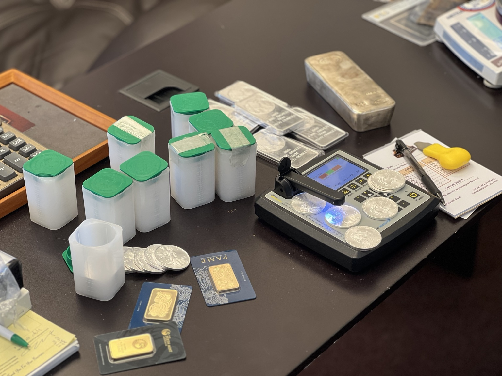
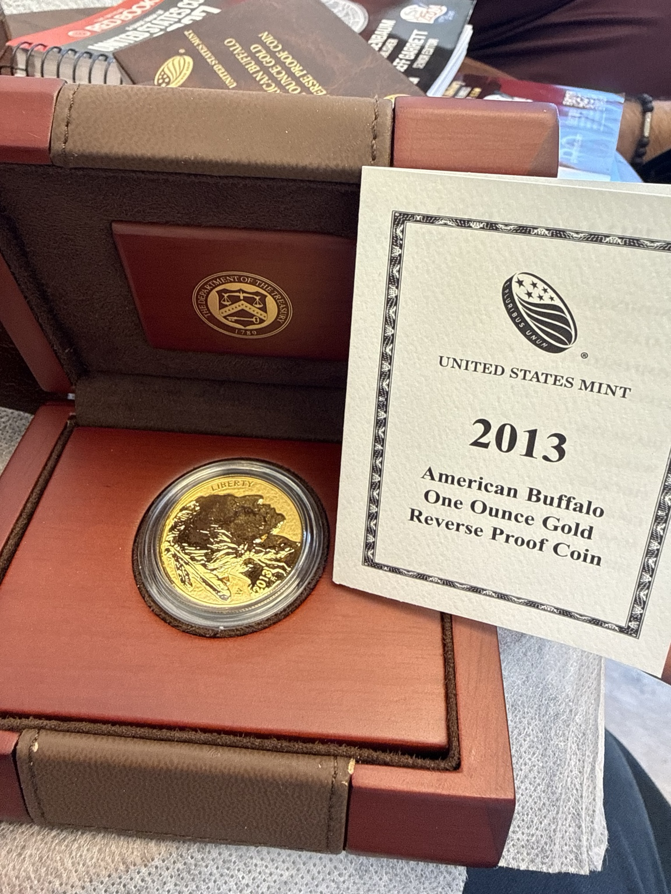
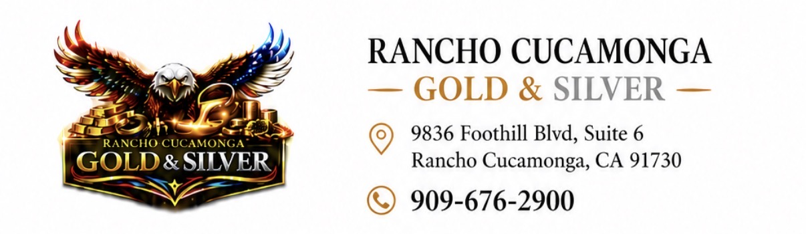
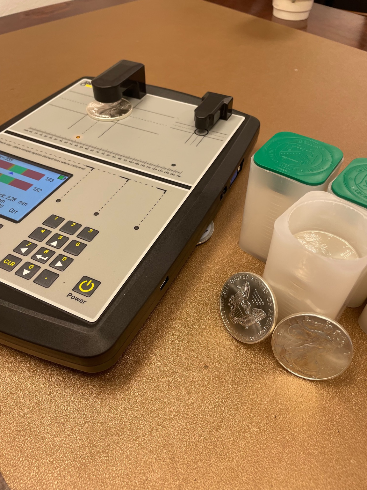
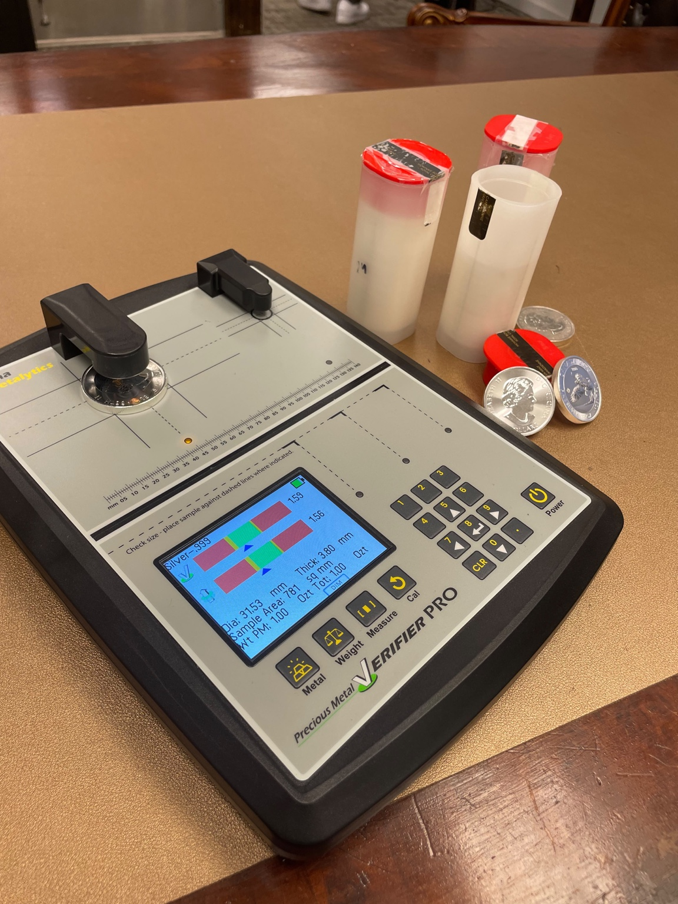
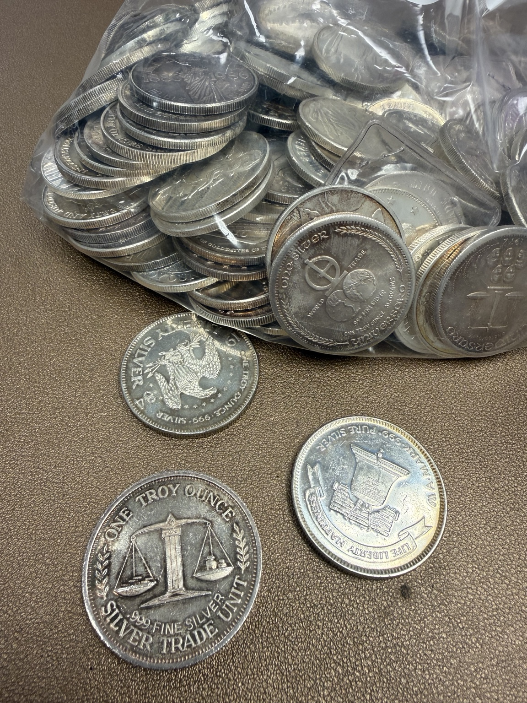

RANCHO CUCAMONGA
RANCHO CUCAMONGAGOLD & SILVER(909) 676-2900
RANCHO CUCAMONGABring your precious metals to either location for professional testing and a clear offer.
8K, 9K, 10K, 14K, 18K, 21K, 22K and 24K solid gold; yellow, white and rose gold; broken or unwanted jewelry.

American Eagles, Buffalos, Maple Leafs, Krugerrands, Mexican gold, Silver Eagles, Morgan and Peace dollars, constitutional silver and world bullion coins.

Gold and silver bars, rounds and bullion in recognized or unbranded forms, various sizes and weights.

Sterling and other real silver including .925 and .800; flatware, tea sets, trays, bowls and household silver.

Dental gold, crowns, bridges and other precious-metal dental material.

Broken jewelry, clippings, filings, casting scrap, melted pieces, nuggets and other testable precious-metal scrap.

Platinum, palladium and rhodium items can be evaluated when appropriate.